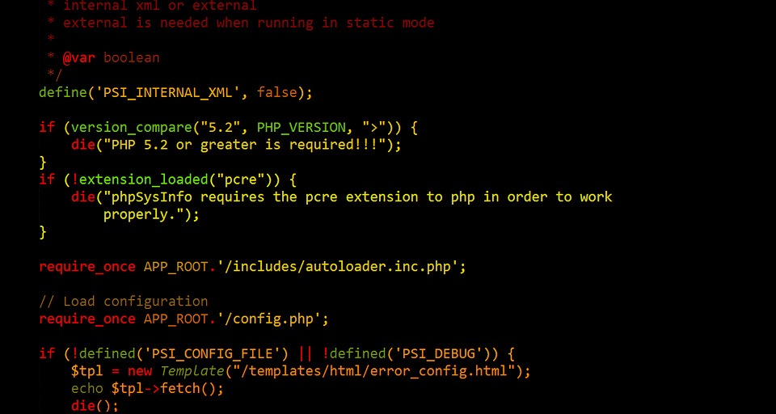
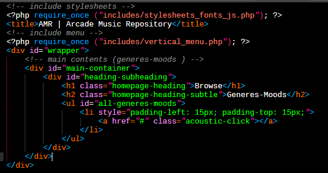

Conceptos Básicos de PHP
PHP, acrónimo recursivo en inglés de PHP Personal Hypertext processor (preprocesador de hipertexto), es un lenguaje de programación de propósito general de código del lado del servidor originalmente diseñado para el desarrollo web de contenido dinámico. Fue uno de los primeros lenguajes de programación del lado del servidor que se podían incorporar directamente en un documento HTML en lugar de llamar a un archivo externo que procese los datos. El código es interpretado por un servidor web con un módulo de procesador de PHP que genera el HTML resultante.

PHP ha evolucionado por lo que ahora incluye también una interfaz de línea de comandos que puede ser usada en aplicaciones gráficas independientes. Puede ser usado en la mayoría de los servidores web al igual que en muchos sistemas operativos y plataformas sin ningún costo.

Fue creado originalmente por Rasmus Lerdorf en el año 1995. Actualmente el lenguaje sigue siendo desarrollado con nuevas funciones por el grupo PHP.2 Este lenguaje forma parte del software libre publicado bajo la licencia PHPv3_01, es una licencia Open Source validada por Open Source Initiative. La licencia de PHP es del estilo de licencias BSD, esta licencia no tiene restricciones de copyleft" asociadas con GPL.